Johnny, it's been a crazy year and some change, with a lot to look back on.
You quit your job pretty soon after we made it official together. After a long search with a lot of pitstops on the way, you made it to your dream job (besides CTO) and I saw every bit of it.
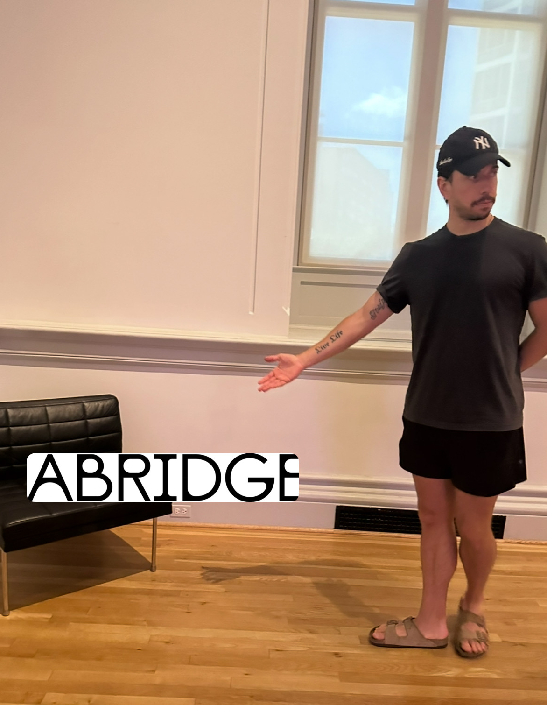
Day 1 at Abridge, looking suspiciously qualified.
We spent all your earnings on chicken tenders. And I’d do it again.

MORE CHIMKEN.

We competed for a spot at Baby Blues like it was a sport.

You cooked a lot of baked ziti. Honestly, an unfair amount of baked ziti.

We made award winning banana bread.

& ate so many pastries.

Your Monstera became a monster.

And you had some good self care nights.
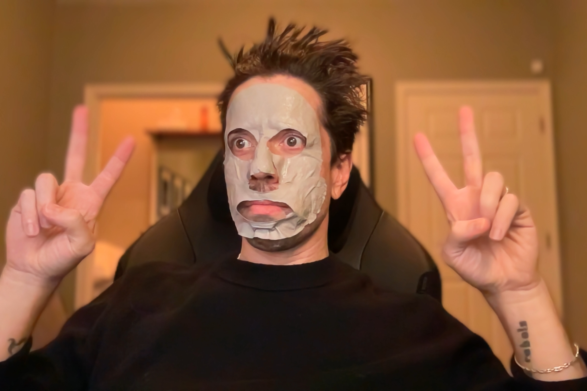Sometimes you were just a silly guy. Always my Johnny Cat.

Speaking of, you became a cat and helped me fight the bad guys.
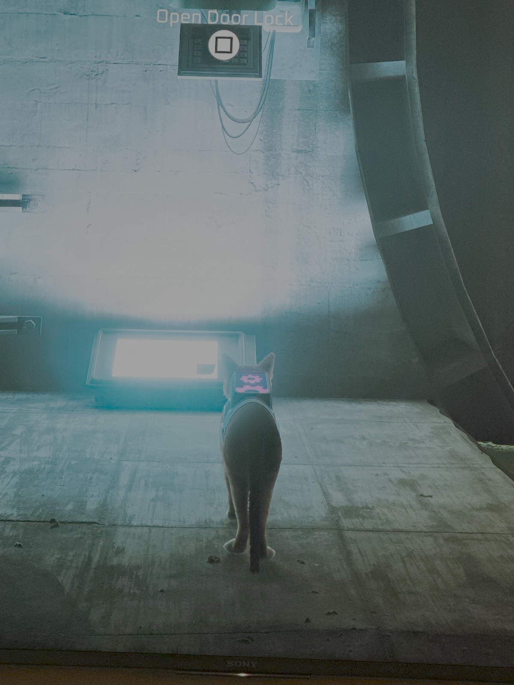Even went to Bali, baby!

I let you be the captain. We didn’t crash. I'd let you do it again.
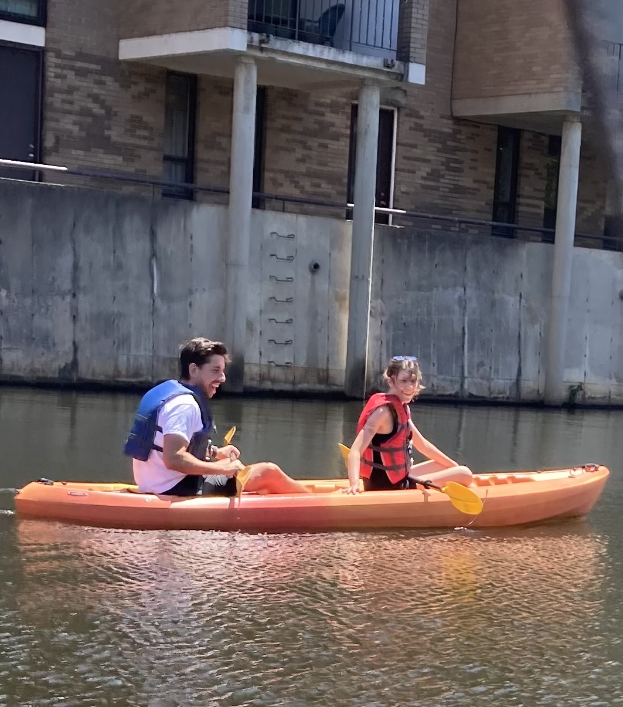You came home with me. I got to watch you do something you love in a place I love.

You made me fall in love with oysters. I can't wait to have oyster dates this summer.

You picked your nose by your mom’s pool.

One thing kept you going… and it was the daydream of getting a puppy. Here you are holding an imaginary puppy.

You caught up with your family. Let's go see them soon!

We walked the beach to close out a very... interesting trip to Florida.

You celebrated your parents’ anniversary, so special.

You met Graham, then the twins. They didn’t ask if you were their uncle, they just knew!

& Your dad came to visit. I know it was hard losing him during the job hunt, but I saw how much you held.

He’d be so proud of you. I hope you know that.

... you enrolled at Hogwarts, maxed out spells, and still found time to be romantic.
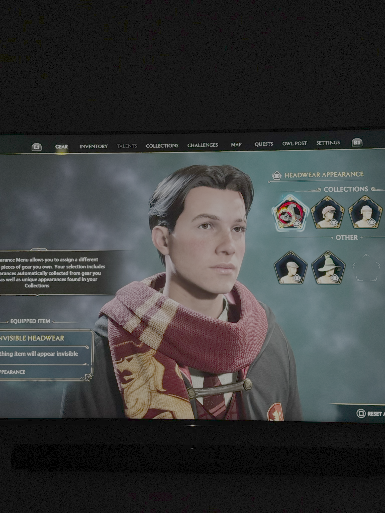EWIC.
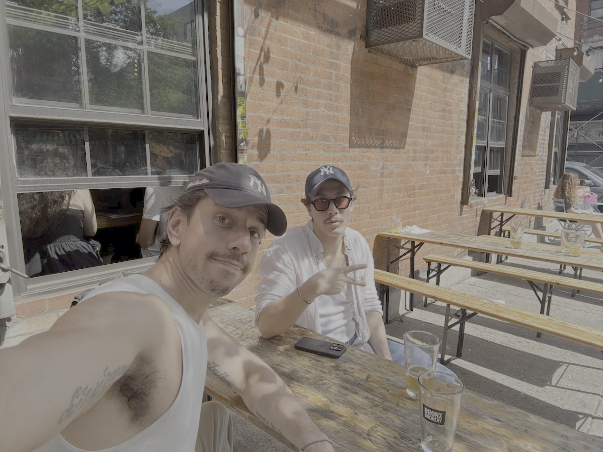You containerized something I still don’t understand and built a Plex server like it was nothing.
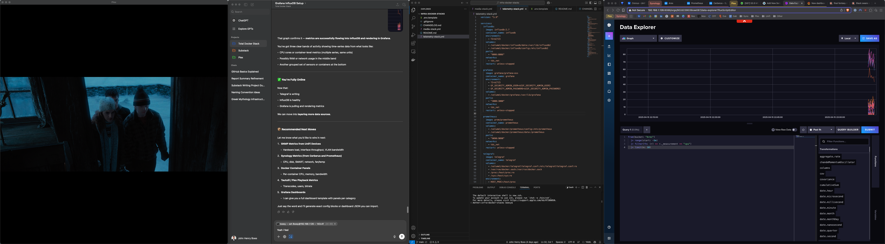AND you secured my Wi-Fi and made it faster. I think that’s your love language.

You read an entire library, but also built an electronic one, too?!
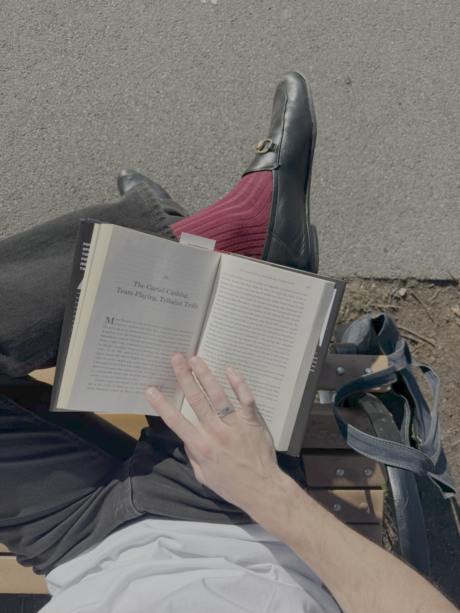You became a Substacker. That’s still my favorite thing about you.
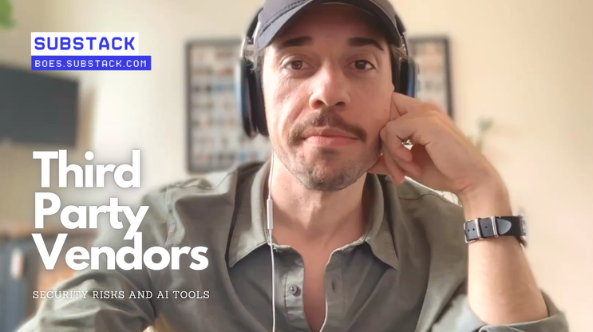We had the best House of the Dragon x Keg & Lantern summer. & that’s a fact.

You ran a million miles. I ran a few with you. It still counts.
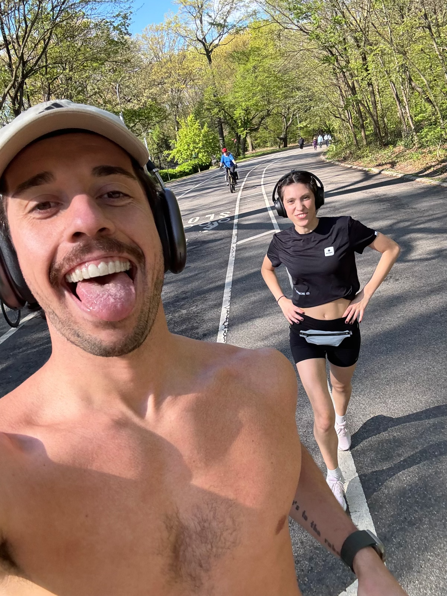You were my rock through my final year of school. I loved having you by my side at graduation.

You interviewed so many times. I felt like a lucky charm the day you made it to the next round.
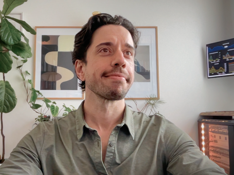You were literally in BOF?! I told everyone. You told no one.
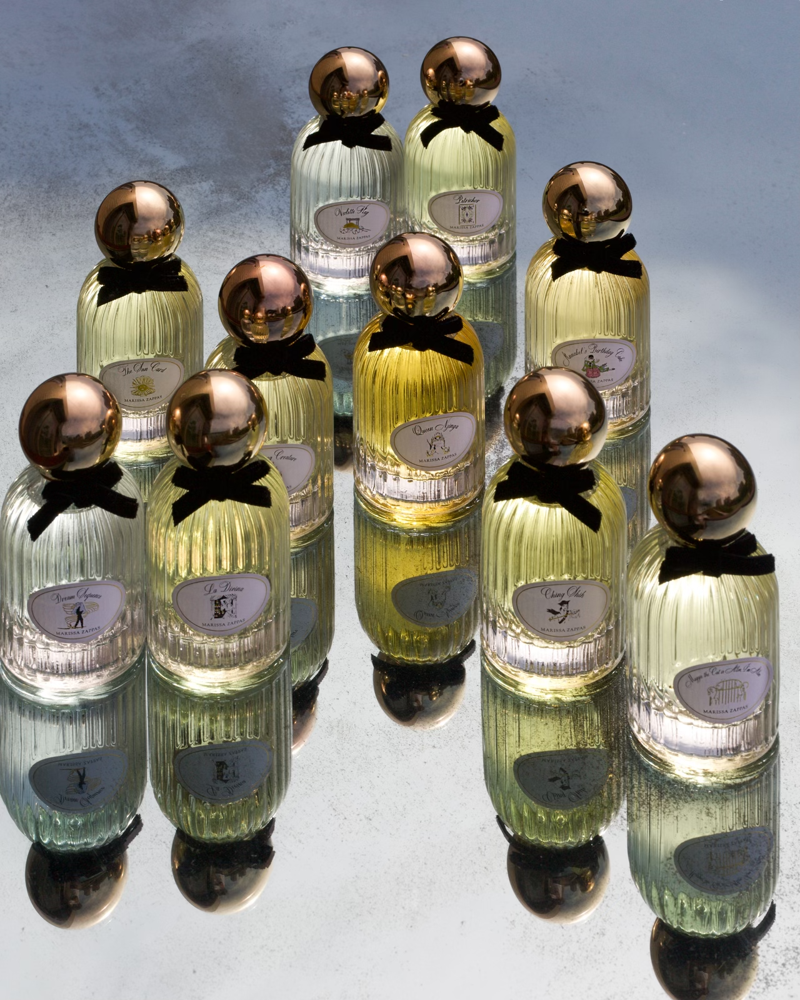You were on The Daily Show. I still brag about that one.

No matter what the job market threw at you, you kept your swagger.

Somehow, we fit a few of your birthdays into the chaos. I like who you are every year.
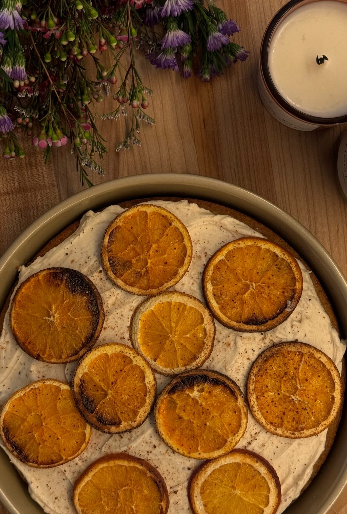Your tenth Newyorkiversary. You made it look like something you'd always known how to do.

You taught me how to use a film camera.

I mostly wanted to point it at you.

We merged our perfume collections. That felt permanent in a good way.

You moved me in. I know we’re still figuring it out, but I wouldn’t want to figure it out with anyone else.

You always looked cool.

We went to Baby Blues with my dad. I think he loves you more than anyone else’s partner. He was so excited to know you got the job!

We kissed on the beach. I wished on every eyelash for you to get a job you love.

When I got worried, you held my hand. When you got worried, I held yours.

You always got me my favorite ice cream, until I like yours better.

You got some Christmas smooches.

And you got some bodega smooches while hunting down Netflix & Chilled.
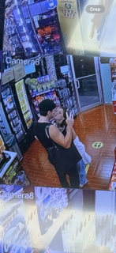I love you with all of my heart and my brain too, Johnny. I’m so proud of you.
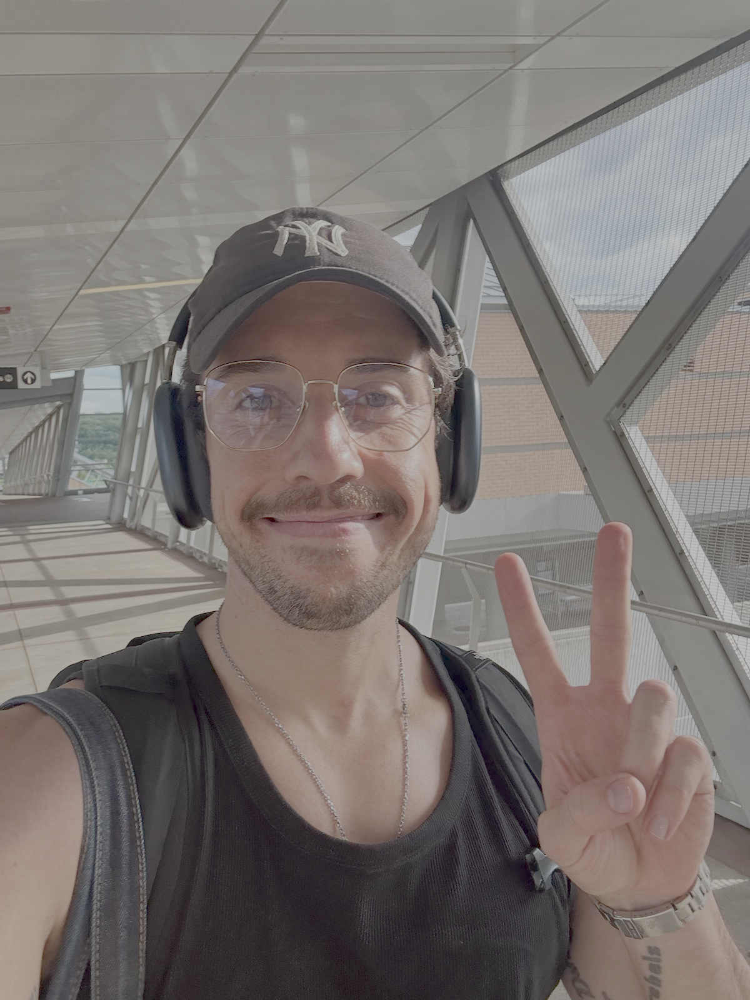Congratulations, babe!!!